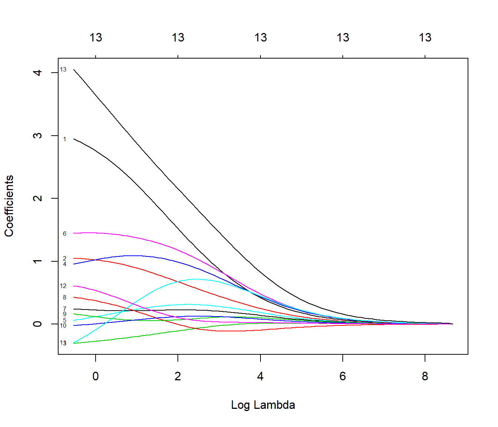
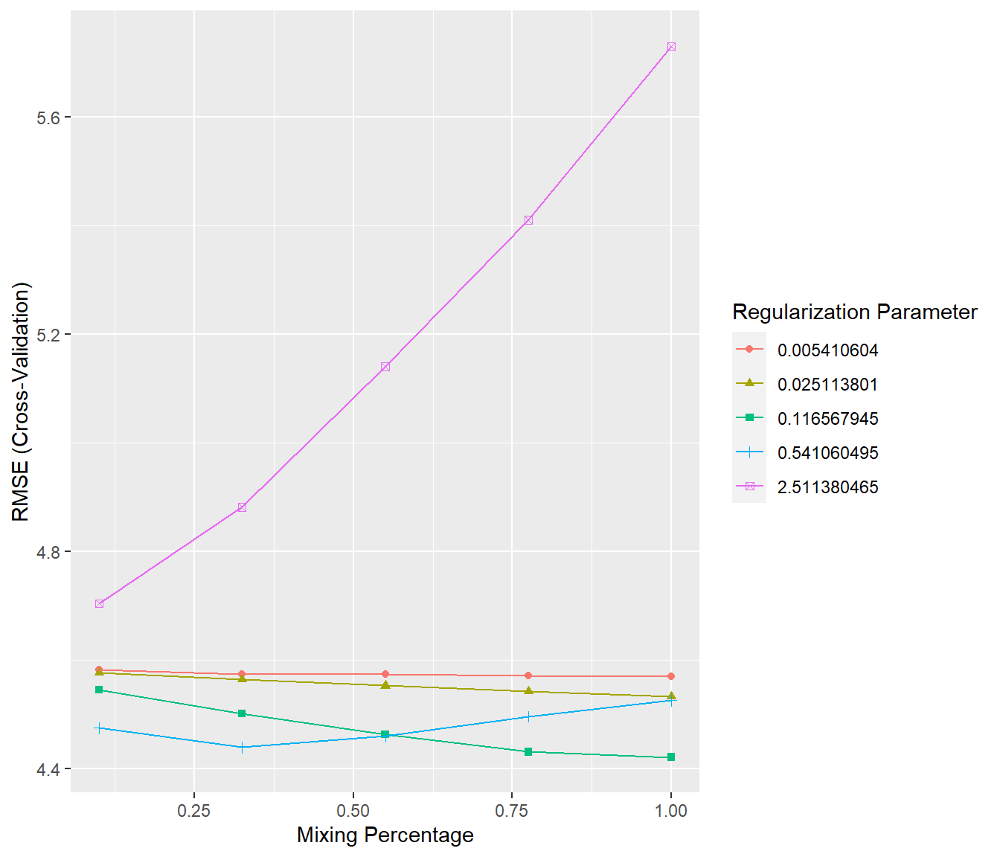

6.6 Métodos de regularización
Como ya se comentó, el procedimiento habitual para ajustar un modelo de regresión lineal es emplear mínimos cuadrados, es decir, utilizar como criterio de error la suma de cuadrados residual \[\mbox{RSS} = \sum\limits_{i=1}^{n}\left( y_{i} - \beta_0 - \boldsymbol{\beta}^t \mathbf{x}_{i} \right)^{2}\]
Si el modelo lineal es razonablemente adecuado, utilizar \(\mbox{RSS}\) va a dar lugar a estimaciones con poco sesgo, y si además \(n\gg p\), entonces el modelo también va a tener poca varianza (bajo las hipótesis estructurales, la estimación es insesgada y además de varianza mínima entre todas las técnicas insesgadas). Las dificultades surgen cuando \(p\) es grande o cuando hay correlaciones altas entre las variables predictoras: tener muchas variables dificulta la interpretación del modelo, y si además hay problemas de colinealidad o se incumple \(n\gg p\), entonces la estimación del modelo va a tener muchas varianza y el modelo estará sobreajustado. La solución pasa por forzar a que el modelo tenga menos complejidad para así reducir su varianza. Una forma de conseguirlo es mediante la regularización (regularization o shrinkage) de la estimación de los parámetros \(\beta_1, \beta_2,\ldots, \beta_p\) que consiste en considerar todas las variables predictoras pero forzando a que algunos de los parámetros se estimen mediante valores muy próximos a cero, o directamente con ceros. Esta técnica va a provocar un pequeño aumento en el sesgo pero a cambio una notable reducción en la varianza y una interpretación más sencilla del modelo resultante.
Hay dos formas básicas de lograr esta simplificación de los parámetros (con la consiguiente simplificación del modelo), utilizando una penalización cuadrática (norma \(L_2\)) o en valor absoluto (norma \(L_1\)):
Ridge regression (Hoerl, 1970) \[\mbox{min}_{\beta_0, \boldsymbol{\beta}} \mbox{RSS} + \lambda\sum_{j=1}^{p}\beta_{j}^{2}\]
Equivalentemente, \[\mbox{min}_{\beta_0, \boldsymbol{\beta}} \mbox{RSS}\] sujeto a \[\sum_{j=1}^{p}\beta_{j}^{2} \le s\]
Lasso (least absolute shrinkage and selection operator, Tibshirani, 1996) \[\mbox{min}_{\beta_0, \boldsymbol{\beta}} RSS + \lambda\sum_{j=1}^{p}|\beta_{j}|\]
Equivalentemente, \[\mbox{min}_{\beta_0, \boldsymbol{\beta}} \mbox{RSS}\] sujeto a \[\sum_{j=1}^{p}|\beta_{j}| \le s\]
Una formulación unificada consiste en considerar el problema \[\mbox{min}_{\beta_0, \boldsymbol{\beta}} RSS + \lambda\sum_{j=1}^{p}|\beta_{j}|^d\]
Si \(d=0\), la penalización consiste en el número de variables utilizadas, por tanto se corresponde con el problema de selección de variables; \(d=1\) se corresponde con lasso y \(d=2\) con ridge.
La ventaja de utilizar lasso es que va a forzar a que algunos parámetros sean cero, con lo cual también se realiza una selección de las variables más influyentes. Por el contrario, ridge regression va a incluir todas las variables predictoras en el modelo final, si bien es cierto que algunas con parámetros muy próximos a cero: de este modo va a reducir el riesgo del sobreajuste, pero no resuelve el problema de la interpretabilidad. Otra ventaja de utilizar lasso es que hace un mejor tratamiento de las variables predictoras correlacionadas al tener tendencia a seleccionar una y anular las demás (esto también puede verse como un inconveniente, ya que pequeños cambios en los datos pueden dar lugar a distintos modelos).
Dos generalizaciones de lasso son least angle regression (LARS, Efron et al., 2004) y elastic net (Zou y Hastie, 2005). Elastic net combina las ventajas de ridge y lasso, minimizando \[\mbox{min}_{\beta_0, \boldsymbol{\beta}} \ \mbox{RSS} + \lambda \left( \frac{1 - \alpha}{2}\sum_{j=1}^{p}\beta_{j}^{2} + \alpha \sum_{j=1}^{p}|\beta_{j}| \right)\] con \(0 \leq \alpha \leq 1\).
Es muy importante estandarizar (centrar y reescalar) las variables predictoras antes de realizar estas técnicas. Fijémonos en que, así como \(\mbox{RSS}\) es insensible a los cambios de escala, la penalización es muy sensible. Previa estandarización, el término independiente \(\beta_0\) (que no interviene en la penalización) tiene una interpretación muy directa, ya que \[\widehat \beta_0 = \bar y =\sum_{i=1}^n \frac{y_i}{n}\]
Los dos métodos de regularización comentados dependen del hiperparámetro \(\lambda\) (equivalentemente, \(s\)). Es muy importante seleccionar adecuadamente el valor del hiperparámetro, por ejemplo utilizando validación cruzada. Hay algoritmos muy eficientes que permiten el ajuste, tanto de ridge regression como de lasso de forma conjunta (simultánea) para todos los valores de \(\lambda\).
6.6.1 Implementación en R
Hay varios paquetes que implementan estos métodos: h2o, elasticnet, penalized, lasso2, biglasso, etc., pero el paquete glmnet utiliza una de las más eficientes.
El paquete glmnet no emplea formulación de modelos, hay que establecer la respuesta
y y una matriz o data.frame con las variables explicativas x.
Además, no admite predictores categóricos ni datos faltantes, por lo que puede ser recomendable emplear la función model.matrix() para construir la matriz de diseño x (o Matrix::sparse.model.matrix() si el conjunto de datos es muy grande) a partir de una fórmula (alternativamente se pueden emplear la herramientas implementadas en el paquete caret).
La función principal es:
family: familia del modelo lineal generalizado (ver Sección 6.8); por defecto"gaussian"(modelo lineal con ajuste cuadrático), también admite"binomial","poisson","multinomial","cox"o"mgaussian"(modelo lineal con respuesta multivariante).alpha: parámetro \(\alpha\) de elasticnet \(0 \leq \alpha \leq 1\). Por defectoalpha = 1penalización lasso (alpha = 0para ridge regression).lambda: secuencia (opcional) de valores de \(\lambda\); si no se especifica se establece una secuencia por defecto (en base a los argumentos adicionalesnlambdaylambda.min.ratio). Se devolverán los ajustes para todos los valores de esta secuencia (también se podrán obtener posteriormente para otros valores).
Entre los métodos genéricos disponibles del objeto resultante, coef() y predict() permiten obtener los coeficientes y las predicciones para un valor concreto de \(\lambda\), que se debe especificar mediante el argumento s = valor (“For historical reasons we use the symbol ‘s’ rather than ‘lambda’”).
Aunque para seleccionar el un valor “óptimo” del hiperparámetro \(\lambda\) (mediante validación cruzada) se puede emplear:
Esta función también devuelve los ajustes con toda la muestra de entrenamiento (en la componente $glmnet.fit) y se puede emplear el resultado directamente para predecir o obtener los coeficientes del modelo.
Por defecto seleccionando \(\lambda\) mediante la regla de “un error estándar” de Breiman et al. (1984) (componente $lambda.1se), aunque también calcula el valor óptimo (componente $lambda.min; que se puede seleccionar con estableciendo s = "lambda.min").
Para más detalles consultar la vignette del paquete An Introduction to glmnet.
Continuaremos con el ejemplo de los datos de clientes de la compañía de distribución industrial HBAT (en este caso todos los predictores son numéricos y no hay datos faltantes):
6.6.2 Ejemplo: Ridge Regression
Ajustamos los modelos de regresión ridge (con la secuencia de valores de \(\lambda\) por defecto) con la función glmnet() con alpha=0 (ridge penalty):

Podemos obtener el modelo o predicciones para un valor concreto de \(\lambda\):
## 14 x 1 sparse Matrix of class "dgCMatrix"
## 1
## (Intercept) 3.56806743
## calidadp 2.41027431
## web 0.94414628
## soporte -0.22183509
## quejas 1.08417665
## publi 0.20121976
## producto 1.41018809
## imgfvent 0.21140360
## precio 0.26171759
## garantia 0.07110803
## nprod 0.04859325
## facturac 0.22695054
## flexprec 0.37732748
## velocida 3.11101217Para seleccionar el parámetro de penalización por validación cruzada empleamos cv.glmnet():

En este caso el parámetro óptimo (según la regla de un error estándar) sería:
## [1] 3.413705y el correspondiente modelo contiene todas las variables explicativas:
## 14 x 1 sparse Matrix of class "dgCMatrix"
## 1
## (Intercept) 8.38314273
## calidadp 2.06713538
## web 0.84771656
## soporte -0.17674892
## quejas 1.08099022
## publi 0.25926570
## producto 1.34198207
## imgfvent 0.21510001
## precio 0.15194226
## garantia 0.05417865
## nprod 0.08252518
## facturac 0.45964418
## flexprec 0.24646749
## velocida 2.70697234Finalmente evaluamos la precisión en la muestra de test:
newx <- as.matrix(test[, -14])
pred <- predict(cv.ridge, newx = newx) # s = "lambda.1se"
accuracy(pred, obs)## me rmse mae mpe mape r.squared
## 0.74752331 5.04159165 4.08299692 0.03577857 7.26473444 0.750874566.6.3 Ejemplo: Lasso
También podríamos ajustar modelos lasso con la opción por defecto de glmnet() (alpha = 1, lasso penalty).
Pero en este caso lo haremos al mismo tiempo que seleccionamos el parámetro de penalización por validación cruzada:

plot(cv.lasso$glmnet.fit, xvar = "lambda", label = TRUE)
abline(v = log(cv.lasso$lambda.1se), lty = 2)
abline(v = log(cv.lasso$lambda.min), lty = 3)
El modelo resultante (oneSE rule) solo contiene 4 variables explicativas:
## 14 x 1 sparse Matrix of class "dgCMatrix"
## 1
## (Intercept) 12.0485398
## calidadp 2.4673862
## web 0.3498592
## soporte .
## quejas .
## publi .
## producto 0.3227830
## imgfvent .
## precio .
## garantia .
## nprod .
## facturac .
## flexprec .
## velocida 6.1011015Por tanto este método también podría ser empleando para la selección de variables (puede hacerse automáticamente estableciendo relax = TRUE, ajustará los modelos sin regularización).
Finalmente evaluamos también la precisión en la muestra de test:
## me rmse mae mpe mape r.squared
## 0.4895391 4.8572144 3.8870383 -0.4192005 6.9713208 0.76876306.6.4 Ejemplo: Elastic Net
Podemos ajustar modelos elastic net para un valor concreto de alpha empleando la función glmnet(), pero las opciones del paquete no incluyen la selección de este hiperparámetro.
Aunque se podría implementar fácilmente (como se muestra en help(cv.glmnet)), resulta mucho más cómodo emplear el método "glmnet" de caret:
## model parameter label forReg forClass probModel
## 1 glmnet alpha Mixing Percentage TRUE TRUE TRUE
## 2 glmnet lambda Regularization Parameter TRUE TRUE TRUEset.seed(1)
# Se podría emplear train(fidelida ~ ., data = train, ...)
caret.glmnet <- train(x, y, method = "glmnet",
preProc = c("zv", "center", "scale"),
trControl = trainControl(method = "cv", number = 5),
tuneLength = 5)
caret.glmnet## glmnet
##
## 160 samples
## 13 predictor
##
## Pre-processing: centered (13), scaled (13)
## Resampling: Cross-Validated (5 fold)
## Summary of sample sizes: 129, 129, 127, 127, 128
## Resampling results across tuning parameters:
##
## alpha lambda RMSE Rsquared MAE
## 0.100 0.005410604 4.581364 0.7148069 3.414825
## 0.100 0.025113801 4.576940 0.7153275 3.408862
## 0.100 0.116567945 4.545239 0.7187940 3.361951
## 0.100 0.541060495 4.474562 0.7284099 3.295198
## 0.100 2.511380465 4.704071 0.7187452 3.594686
## 0.325 0.005410604 4.573738 0.7157479 3.408931
## 0.325 0.025113801 4.564560 0.7167890 3.397543
## 0.325 0.116567945 4.500834 0.7241961 3.326005
## 0.325 0.541060495 4.438653 0.7349191 3.306102
## 0.325 2.511380465 4.881621 0.7184709 3.757854
## 0.550 0.005410604 4.573800 0.7157344 3.411370
## 0.550 0.025113801 4.552473 0.7182118 3.386635
## 0.550 0.116567945 4.462650 0.7291272 3.299872
## 0.550 0.541060495 4.459588 0.7344030 3.358370
## 0.550 2.511380465 5.140746 0.7128471 3.964142
## 0.775 0.005410604 4.570751 0.7161237 3.409145
## 0.775 0.025113801 4.542225 0.7194584 3.378410
## 0.775 0.116567945 4.430677 0.7334438 3.277212
## 0.775 0.541060495 4.495356 0.7323161 3.413533
## 0.775 2.511380465 5.410928 0.7138082 4.213179
## 1.000 0.005410604 4.569043 0.7162973 3.407715
## 1.000 0.025113801 4.532524 0.7206448 3.371146
## 1.000 0.116567945 4.420602 0.7349329 3.279275
## 1.000 0.541060495 4.525359 0.7308248 3.449277
## 1.000 2.511380465 5.730967 0.7102963 4.473639
##
## RMSE was used to select the optimal model using the smallest value.
## The final values used for the model were alpha = 1 and lambda = 0.1165679.
## me rmse mae mpe mape r.squared
## 0.49843131 4.28230542 3.43805154 -0.02851825 6.15711129 0.82026278